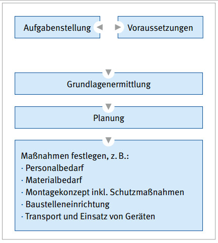
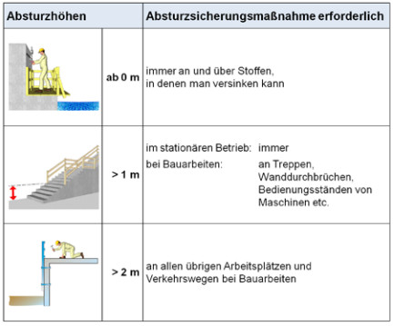
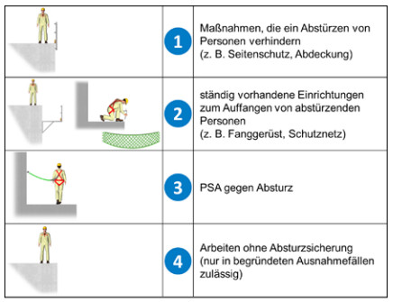
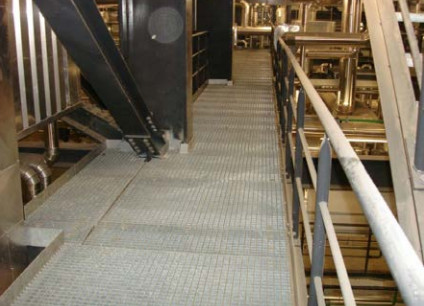

Ein reibungsloser Montageablauf bedingt eine sorgfältige Planung der Bauarbeiten. Um sicher planen zu können, müssen sowohl die Aufgabenstellung als auch die Gegebenheiten auf der Baustelle bekannt sein (Abb. 1-1).
Die Aufgabenstellung geht aus dem Auftrag mit Leistungsbeschreibung und den Zeichnungen hervor. Auf Basis dieser Vorgaben können die Verlegepläne für die Roste erstellt und der Personaleinsatz vorgeplant werden.
Die Gegebenheiten der Bau-/Montagestelle beeinflussen wesentlich die Montageart, die Montagehilfsmittel und die Montagefolge. In die Planung der Montage sind die Schutzmaßnahmen zur sicheren Durchführung der Arbeiten zu integrieren.
Geplant werden müssen auch die Baustelleneinrichtung und der Materialtransport zur Montagestelle. Die Tragfähigkeit der Zufahrten und Wege auf der Baustelle müssen bekannt sein, damit der Einsatz z. B. von Fahrzeugen, Kranen und fahrbaren Hubarbeitsbühnen sicher erfolgen kann. Es gehört zu einer sorgfältigen Montagevorbereitung, bereits im Planungsstadium die Bau- bzw. Montagestelle in Augenschein zu nehmen und sich mit den verantwortlichen Personen (Bauleitung, Architektin, Architekt, Planer, Planerin, Bauherrin, Bauherrn) abzustimmen. Dazu gehören Termine, Baufreigaben, Baustellenordnung, Sicherheits- und Gesundheitsschutzplan (SiGePlan) und sonstige auf der Baustelle geltende Regelungen.

Abb. 1-1 Grundlagen der Planung
In die Planung der Montagearbeiten sind Aspekte des Arbeits- und Gesundheitsschutzes zu integrieren und entsprechend zu dokumentieren.
Montagearbeiten zeichnen sich durch wechselnde Arbeitsplätze und sich schnell ändernde Tätigkeiten aus. Dies begründet das hohe Gefährdungspotential bei Bauarbeiten. Es ist Aufgabe der Unternehmerinnen und Unternehmer bzw. der beauftragten Führungskräfte, diese Gefährdungen zu beurteilen, Schutzmaßnahmen zu planen und durchzuführen sowie die Einhaltung der Schutzmaßnahmen zu kontrollieren.
Unabhängig von der Art der Dokumentation muss die Gefährdungsbeurteilung mindestens Folgendes enthalten:
Dabei sind alle Tätigkeiten und Arbeitsplätze sowie Verkehrswege, die zur Erfüllung des Auftrages erforderlich sind, zu berücksichtigen. Dies schließt auch die Montage und Demontage von Schutzeinrichtungen und die Gefährdung anderer Gewerke ein.
Die Dokumentationspflicht dient insbesondere der Rechtssicherheit der Unternehmer und Unternehmerinnen bzw. der verantwortlichen Personen. Im Schadensfall kann anhand der Dokumentation nachgewiesen werden, dass die Arbeitsschutzpflichten erfüllt wurden. Die Dokumentation ist außerdem eine hilfreiche Grundlage für die Ein- und Unterweisung der Mitarbeiterinnen und Mitarbeiter.
Unterstützung zur Erstellung und Dokumentation der Gefährdungsbeurteilung bieten die TRBS 1111 "Gefährdungsbeurteilung und sicherheitstechnische Bewertung" und entsprechende Handlungshilfen der Unfallversicherungsträger.
1.2.1 Absturz – die größte Gefährdung auf Baustellen
Die meisten tödlichen und schweren Arbeitsunfälle auf Baustellen sind auf Abstürze zurückzuführen. Ab welchen Höhen die Beschäftigten gegen Absturz zu sichern sind, zeigt Abb. 1-2.

Abb. 1-2 Absturzhöhen, ab denen Maßnahmen gegen Absturz eingesetzt werden müssen (§ 12 DGUV Vorschrift 38/39 "Bauarbeiten")
Bei der Auswahl der Absturzsicherungsmaßnahmen ist eine festgelegte Rangfolge zu beachten (Abb. 1-3). In erster Linie muss Seitenschutz zum Einsatz kommen. Nur wenn dieser nicht einsetzbar ist, können Maßnahmen in der Reihenfolge, wie in Abb. 1-3 dargestellt, ausgewählt werden.
Kollektive Schutzmaßnahmen, wie Seitenschutz oder Auffangnetze, haben grundsätzlich Vorrang vor individuellen Maßnahmen (Persönliche Schutzausrüstung gegen Absturz [PSA gegen Absturz]). Der Anhang 7 enthält einen Gefährdungskatalog für die Montage von Rosten.

Abb. 1-3 Rangfolge der Schutzmaßnahmen
Mit der Montageanweisung teilt die Montageleitung der Aufsichtführung vor Ort wichtige sicherheitsrelevante Informationen mit, z. B.:
Die Montageanweisung muss als wesentliche Unterlage auf der Baustelle vorliegen. Gehen alle Informationen aus Zeichnungen und sonstigen Dokumenten hervor, kann auf eine Montageanweisung verzichtet werden.
Ein Verlegeplan ohne zusätzliche Informationen ist im Regelfall nicht ausreichend. Der Anhang 1 enthält das Formular einer Montageanweisung.
Zeichnungen und Verlegepläne geben den ausführenden Monteuren und Monteurinnen die wesentlichen Angaben zur fachgerechten technischen Durchführung der Arbeiten.
Sie können z. B. Angaben enthalten über:

Abb. 1-4 Ausgelegte Gitterrostbühne
Die Leitung von Bau- und Montagearbeiten führt die Unternehmensleitung oder eine fachlich geeignete und schriftlich beauftragte Führungskraft durch. Sie gewährleisten neben der technisch richtigen Ausführung auch die sichere Durchführung der Arbeiten. Ein Muster der Übertragung von Unternehmerpflichten auf geeignete Vorgesetzte enthält der Anhang 2.
Weisungsbefugte Personen (Aufsichtführende) beauf- sichtigen die Arbeiten. Sie verfügen über ausreichende Erfahrungen und Kenntnisse über die zu beaufsichtigen- den Bauarbeiten sowie zu deren sicheren Durchführung. Sie überwachen die angeordneten Maßnahmen und sind gegenüber dem eigenen Personal weisungsbefugt. Verlässt die aufsichtführende Person die Baustelle, ist eine geeignete Vertretung zu bestimmen.
Gegenüber Zeitarbeitnehmerinnen und Zeitarbeitnehmern besteht die gleiche Verpflichtung zur Aufsicht und Fürsorge wie für eigene Beschäftigte.
Grundsätzlich sorgt die Bauleitung bzw. eine verantwortliche Person durch Koordination dafür, dass eine gegenseitige Gefährdung von örtlich gleichzeitig tätigen Unternehmen vermieden wird. Aber auch jedes Unternehmen selbst verhindert eine Gefährdung von in der Nähe arbeitenden Mitarbeitenden anderer Unternehmen. Hierzu sind Absprachen und Vereinbarungen zu treffen, z. B. über eine weisungsbefugte Person, die vor Ort die Arbeiten aufeinander abstimmt.
Nähere Ausführungen enthält die DGUV Vorschrift 1 "Grundsätze der Prävention".
Bei der Koordinierung wird die Bauleitung, je nach Größe und Gefährdungspotenzial der Baustelle, von der Sicherheits- und Gesundheitsschutzkoordination (SiGeKo) unterstützt. Schon in der Planungsphase des Bauvorhabens hat diese einen Sicherheits- und Gesundheitsschutzplan (SiGePlan) zum reibungslosen und sicheren Ablauf der Bauarbeiten zu erstellen. Hierzu benötigt sie Informationen der ausführenden Firmen.
Die Einhaltung des SiGePlans ist für alle auf der Baustelle verbindlich und wird durch den SiGeKo überwacht.
Im Vorfeld der Montagearbeiten sind Maßnahmen für Notfälle und Erste Hilfe erforderlichenfalls zusammen mit der Bauherrin oder dem Bauherrn festzulegen. Es ist für eine ausreichende Anzahl ausgebildeter Ersthelfer und Ersthelferinnen und für das notwendige Erste-Hilfe- Material auf der Baustelle zu sorgen.
Je nach Tätigkeit und Gefährdungsgrad sind Rettungs- mittel auf Bau- und Montagestellen vorzuhalten. Eine ausreichende Anzahl an Beschäftigten muss im Umgang mit den Rettungsmitteln geübt sein.